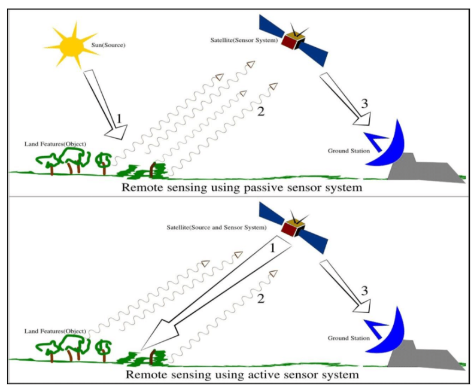

1 Week 1: Intro to Remote Sensing
What is remote sensing?
Remote sensing is the process of acquiring information (mainly geographic imagery of Earth features) from a distance (also known as Earth Observation).
This is achieved through sensors mounted on a platform, which reflect energy (containing information) to the ground station
Platforms containing sensors include: planes, drones, satellites, and phones
Energy reflected from sensors to ground station is known as electromagnetic waves.
How does it work?
Energy reflected from energy source (sun) to sensors to ground station is known as electromagnetic radiation
- EMR energy does not automatically reflect to sensor, goes through changes via surface and atmosphere first
Main example of remote sensing is satellites circling the earth containing sensors which reflect available energy (mainly from the sun). This is known as passive remote sensing.
Active remote sensing is when sensors contain their own energy source for illumination. Examples include x-rays and radars.

What are its applications?
| Source | Applications |
|---|---|
| Dynamic world (sentinel data) | Near real-time cover dataset (10m resolution) |
| Landsat | Urban/green space coverage and accessibility |
| Sentinel | Pollution studies |
| Landsat and sentinel | Illegal logging |
| Landsat | Forest fires |
| Landsat and sentinel | Temperature studies (e.g. urban heat island) |
| Landsat, sentinel, and SAR | Flooding/disaster response/building footprints |
Considerations when dealing with remotely sensed data
Atmospheric interference (scattering due to weather, etc)
Resolution type and detail
Main concepts
Electromagnetic radiation (EMR) = electric + magnetic fields moving as waves (found in all forms of waves)
Radiant energy = energy carried by EMR waves
Shortwave radiation = energy from the sun
RAYLEIGH SCATTERING = Scattering of atmospheric particles
RESOLUTION = potential detail provided by imagery
Spatial = size of raster grid
Spectral = capacity of a sensor to document electromagnetic wavelengths/number of bands from EM spectrum (which could include colour, infrared light, and more). In other words, describes the ability of a sensor to define fine wavelength intervals
- The finer the spectral resolution, the narrower the range that a sensor can document. Often earth surfaces require multispectral data for it to form a true colour image.
Temporal = time a location is revisited
Radiometric = ability to discriminate slight differences in energy
Reflection
Introduced to the concept of remote sensing (how it works, applications in a modern setting, how it can be utilised to track global phenomena).
There are always considerations when working with data depending on factors such as resolution type, atmospheric determinants which lead to distortion, other types of interference (all of which can be corrected to a certain extent).
Allowed me to consider a new angle to approaching data-driven solutions regarding environmental issues, from solving urban heat temperature issues due to the placement of built features, to disaster risk management.
Home country of Malaysia suffers from many environmental and man-made hazards.
As someone from Southeast Asia, a region becoming increasingly prone to climate risks, the potential to provide solutions using this kind of data may help decrease and/or eliminate the collateral damage caused by natural disasters, as well as pinpoint root causes in order to form data-backed solutions.
References
https://en.wikipedia.org/wiki/Remote_sensing